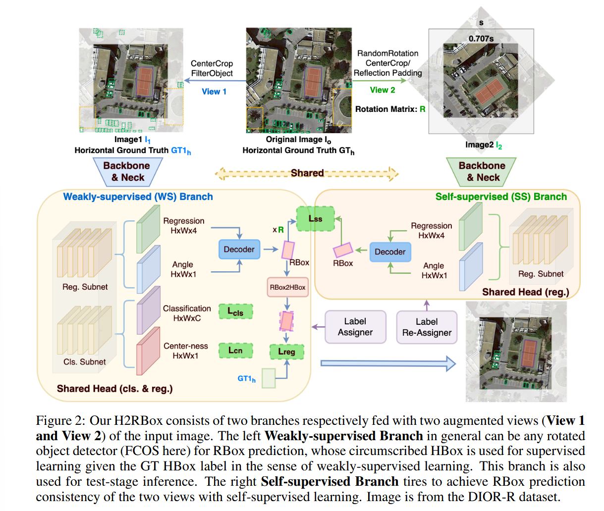

《H2RBOX: HORIZONTAL BOX ANNOTATION IS ALL YOU NEED FOR ORIENTED OBJECT DETECTION》阅读笔记
简介
通过弱监督+自监督的网络结构，实现了把水平框端到端地快速转化成旋转框。
背景
- 现在带有水平框的训练集很多，但我们想要效果更优秀的旋转框。旋转框对检测效果更好，但是更加贵。
- 能够高效把水平框转化为旋转框的方法还没有，只有一个 HBox→mask→RBox 的慢并且效果不好的方法。
实现
训练的时候同时使用 WS（weakly-supervised）和 SS（self-supervised），推理的时候只使用 WS，所以推理速度并不会因为多了一个分支变慢。SS 是使用旋转的增强视图训练的。最终损失为两个分支的损失的加权和。
两个分支共享 backbone，neck 和 head（回归部分）。

WS 分支
在原来的骨干网络上直接多添加一个角度的回归。
重点在损失层面：数据集只给我们提供了水平框，那如何确定损失呢？需要一步步来：
第一步：水平外接矩形限制
画出预测的旋转框的外接矩形，计算它和 GT 水平框的 Loss。
这个方法是有缺陷的，在 v2 中会有一种更好的方法替代。
但是在一个水平框里面会有无数个内接矩形，那就得引入 SS 分支一步步减少情况。
SS 分支
输入：原图随机旋转后填充黑边的结果
填充黑边的目的是模型可以从黑边中学习到旋转的信息。这是不应该发生的。
旋转后填充黑边的两种方法
- 中间区域裁剪法
把包含黑边的区域剔除（如模型示例图）。在这种操作下，需要对原图做一样的裁切。
这种方法会降低图片的输入大小（其实不会导致损失信息，因为旋转角度是随机的，多轮训练后信息都被包含进来了），不如第二种方法表现好。
- 反射填充法
用轴对称的方法填充黑边。因为黑边不参与 SS 分支的回归损失，所以填充了未标记的前景对象不会有影响。
第二步：尺度约束
要求 WS 分支和 SS 分支的预测出来的框的尺度一致，这样只剩下正确的结果和中心对称的结果。
为什么预测出来尺度一样就可以限制出正确的结果？因为有第一步的水平外接矩形约束，在多轮训练后，只有一个尺度的框在 SS 中的多种旋转后，它的水平外接矩形和 GT 的水平框高度重合。
对于下面两条公式：
wgt=w∣cosθ∣+h∣sinθ∣hgt=w∣sinθ∣+h∣cosθ∣
其中w和h为弱监督旋转框的长宽，模型会不断在 SS 分支的不同的旋转角下修正它们，让w和h始终在所有的θ下都符合条件。
首先 ss 阶段是没有 gt 的，是一个 inference 过程。由于 ss 和 ws 是共享参数的，所以它随着 ws 的训练，也可以较好检测出任意图像上目标的水平外接矩形，也就知道了 wss 和 hss。
其实就是文中提到的外接矩形约束，输入任意的图像，网络都可以输出一个 rbox，这个 rbox 的水平外接矩形就是目标的水平 gt，也就知道了对应的 wss和 hss。
第三步：角度约束
显然如上的约束过后，会弄出来两对框。这里称正确预测框为真框，它的对称框为假框。
那么有：
| 真框 |
假框 |
| WS 的真框 A |
WS 的假框 C |
| SS 的真框 B |
SS 的假框 D |
对于模型来说，图片进入 SS 以前，旋转的方式是已知的。我们可以通过旋转的方式匹配出两个真框，因为只有两个真框的线性变换关系是R。

SS 前的旋转公式为：
(x∗,y∗)=(x−xc,y−yc)R⊤+(xc,yc),R=(cosΔθsinΔθ−sinΔθcosΔθ)
对旋转矩阵和该公式的小推导
设 b 为起始点为(xc,yc)，终点为(x,y)的向量，旋转后的点为(x∗,y∗)
极坐标下， b=∣b∣(cosφ,sinφ)
令R为旋转矩阵，将向量b逆时针旋转，有
bR=∣b∣(cos(φ+θ),sin(φ+θ))=∣b∣(cosφcosθ−sinφsinθ,sinφcosθ+cosφsinθ)
令 (cosφcosθ−sinφsinθ,sinφcosθ+cosφsinθ)=(cosφ,sinφ)RT
由待定系数法，得
RT=(cosθ−sinθsinθcosθ)
顺时针旋转时，代入θ=−θ，发现化出来的是R。
对图片旋转，相当于对坐标系在同一方向旋转，相当于把点向逆方向旋转。所以上面乘的是RT。对坐标的表示形式简单进行向量加减法即可。
标签重分配
WS 分支和 SS 分支会输出一堆 RBox，需要找到一一对应的方式才能计算一致性损失。
- O2O：一对一匹配
- O2M：令最接近 GT 框的 WS 分支中的框作为 SS 分支的目标框

损失函数
总的损失函数为Ltotal=Lws+λLss，论文使用的λ=0.4
分为两个分支看。
WS 分支
Lws=Nposμ1(x,y)∑Lcls(p(x,y),c(x,y))+Nposμ2(x,y)∑Lcn(cn(x,y)′,cn(x,y))+∑cnposμ3(x,y)∑1{c(x,y)>0}cn(x,y)Lreg(r2h(rbox(x,y)ws),gtbox(x,y)h)
拆解来看：
Lws=分类损失Nposμ1∑Lcls+中心度损失Nposμ2∑Lcn+回归损失∑cnposμ3∑(cn⋅Lreg)
这个损失其实就是基于 FCOS 的损失。
- 分类损失：focal 损失，用正样本数量归一化，就是常规类别误差。
- 中心度损失：交叉熵损失，看看预测出来的框的中心和 GT 的中心偏移多少。CN 是中心点。
- 回归损失：IoU 损失，先找到旋转框的外接矩形框，再计算它和 GT 的 IoU 误差。c=0 是负样本，不参与这个的计算。
这里设置三个权重都为 1.
SS 分支
SS 分支不用找分类损失，只有一个目的：消除角度预测的多解性。
Lss=∑cnpos∗1∑cn∗⋅旋转一致性回归损失Lreg(rboxws∗,rboxss)
这里同样有约束负样本不参与计算，没写出来。
论文里把w、h 和 θ 两部分损失解耦开算了，w、h 部分的损失是计算投影到中心点为（0，0）或者是同中心的水平框之间的 IoU 损失，角度部分就是简单的角度差取三角函数防止角度周期性问题。最后之所以用 min，是考虑多种投影方式，因为有时候边在特殊情况下会出现交换。
其实你可以简单把 Lwhθ 理解成计算的是两个分支预测的 rbox 的重叠程度就行，如旋转 IoU 损失。
SS 分支预测的 RBox rboxss=(xss,yss,wss,hss,θss)需与理论值（WS 分支提供的“目标框”）rboxws∗对齐，损失函数由两部分组成：
Lreg=γ1Lxy+γ2Lwhθ
前面的是中心度损失：
Lxy=∣xss−x∗∣+∣yss−y∗∣
后面的是宽高和角度损失，这个公式很复杂，因为要防止角度周期性：
Lwhθ=min{IoU(Bws,Bss1)+∣sin(θ∗−θss)∣,IoU(Bws,Bss2)+∣cos(θ∗−θss)∣}
本质上就是进行了一个角度损失和IoU损失的叠加。
角度周期性问题前面已经提到过了（跳变）。宽高交换问题指的是w和h互换并且旋转90度之后，本质上这个图形是一样的。需要模型认为这两种图形等价，才能避免预测歧义。